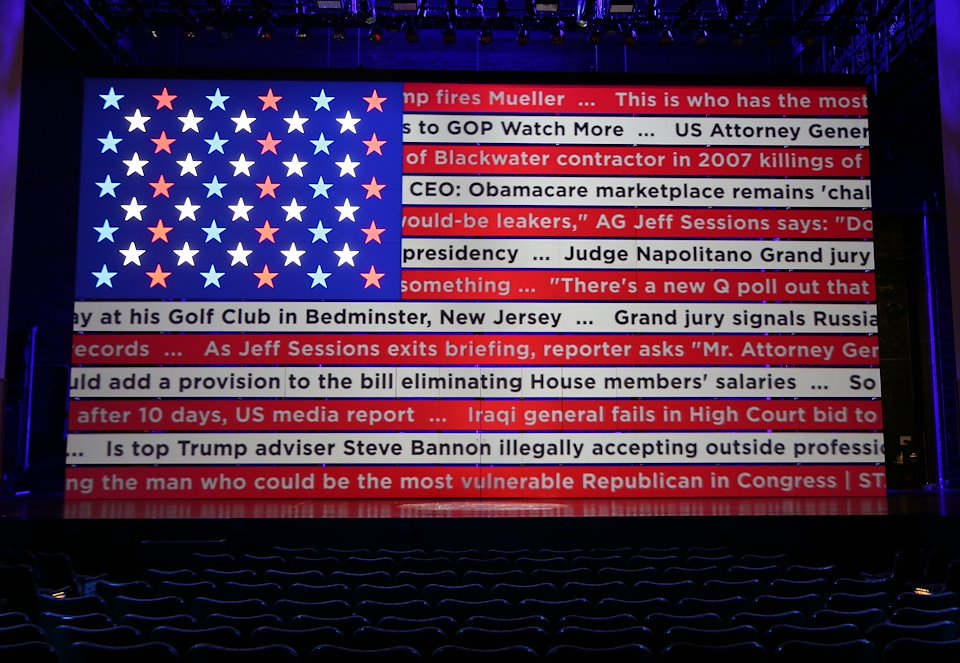
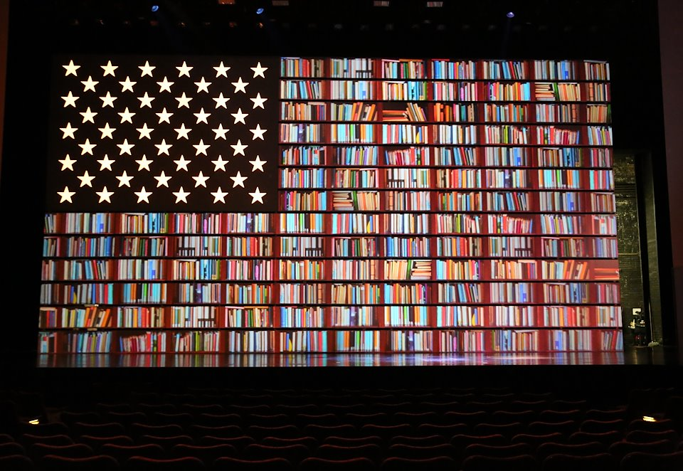
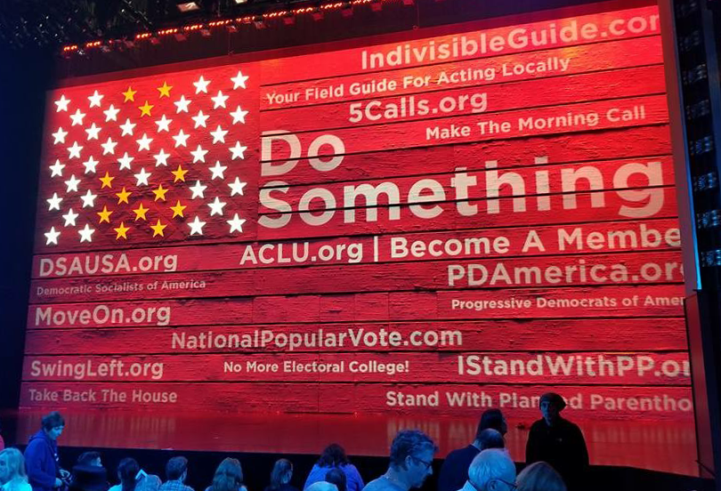
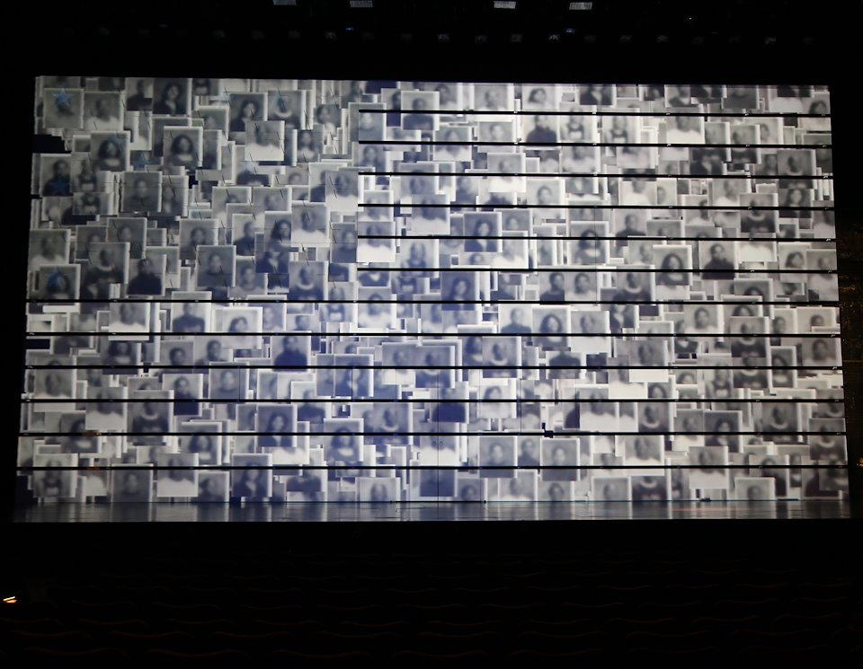

The Terms of My Surrender
Filmmaker Michael Moore makes his Broadway debut tackling issues such as Trump, Flint, and his own history with politics.
Andrew Lazarow led the video design team. We became the first people to utilize Python for a Broadway production with our news feed wall that generated different news headlines on a nightly basis.
For my role, I wrote a program that curated headlines based on assigned topics from varying media sources and rendered out a video. I also worked on and assisted other designs throughout the production.




Credits
By Michael Moore
Directed by Michael Mayer
Set Design by David Rockwell
Costume Design by Jeff Mahshie
Lighting Design by Kevin Adams
Sound Design by Brian Ronan
Movement Direction by Noah Raceys
Video & Projection Design by Andrew Lazarow
Assistant Video Design by Kat Sullivan
Tools used
Python, Cinder, Processing, and AfterEffects
Exhibitions
August 10–October 22, 2017
Belasco Theatre
NY, NY
Selected Press
2017 –
Broadway Review: Michael Moore’s ‘The Terms of My Surrender’, Variety
Michael Moore: The Terms of My Surrender, New York Theatre Guide